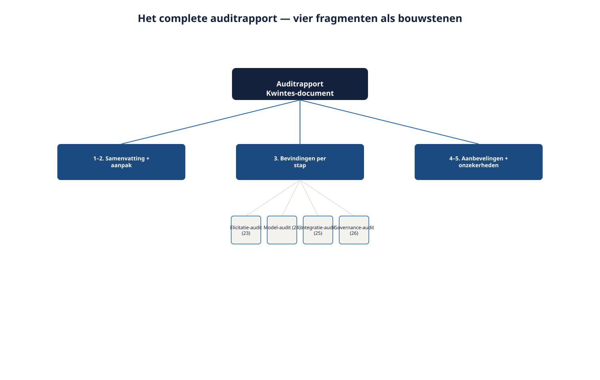
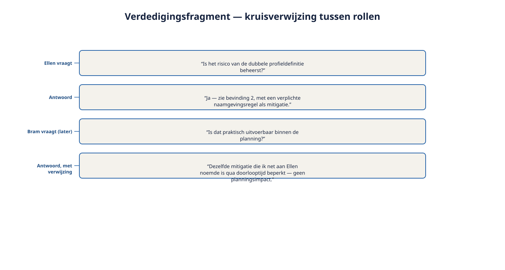

Deel 30 — De masterproef
Slidedeck · Ductus-cursus Requirements Engineering · niveau 3 (expert) · deel 30 van 30 · 20 slides
Slide 1 — De masterproef
De masterproef
Cursus Requirements Engineering — Niveau 3, deel 30 (twee dagdelen)
Ductus
Afsluitend deel van de gehele cursus
Slide 2 — Dagdeel A — Het auditrapport afronden
Dagdeel A — Het auditrapport afronden
Slide 3 — Het document dat Ruben in deel 23 opende.
Het document dat Ruben in deel 23 opende.
Geschreven door iemand die niet meer te bereiken is.
Hier krijgt het zijn definitieve beoordeling.
Slide 4 — De opdracht: het complete auditrapport
De opdracht: het complete auditrapport
- Samenvatting
- Aanpak
- Bevindingen per stap — samengevat én verbonden
- Geprioriteerde aanbevelingen
- Resterende onzekerheden
- Expliciete eindconclusie
Slide 5 — Figuur 30-1

Slide 6 — Opdracht 30.1
Opdracht 30.1 — Het auditrapport samenstellen
Individueel · 90 minuten
Slide 7 — Opdracht 30.2
Opdracht 30.2 — Peer review
Coachende feedback, twee concrete verbeterpunten.
Tweetallen · 45 minuten
Slide 8 — Opdracht 30.3
Opdracht 30.3 — Feedback verwerken
De definitieve versie voor Dagdeel B.
Individueel · 45 minuten
Slide 9 — Dagdeel B — De boardsimulatie
Dagdeel B — De boardsimulatie
Slide 10 — Vier rollen, vier kernvragen
Vier rollen, vier kernvragen
| Rol | Vraagt naar |
|---|---|
| Hetty (bestuur) | Dient dit de Stelselovergang als geheel? |
| Bram (programmadirecteur) | Praktisch uitvoerbaar binnen het programma? |
| Ellen (DNB) | Financiële beheersing aantoonbaar op orde? |
| Radboud (AFM) | Zorgvuldige informatievoorziening geborgd? |
Slide 11 — Figuur 30-2

Slide 12 — Geen van vieren is een tegenstander om te verslaan.
Geen van vieren is een tegenstander om te verslaan.
Een kans om de kwaliteit van het werk te tonen.
Slide 13 — Vier richtlijnen voor de verdediging
Vier richtlijnen voor de verdediging
- Samenvatting eerst, max. 5 minuten
- Antwoord binnen de rolgrens
- Erken onzekerheid hardop
- Verbind antwoorden aan verschillende rollen
Slide 14 — Figuur 30-3

Slide 15 — Opdracht 30.4
Opdracht 30.4 — De verdediging
5 min presenteren, dan bevraging door vier rollen.
Groepen van vijf · 45-60 minuten
Slide 16 — Terugblik: van deel 1 tot hier
Terugblik: van deel 1 tot hier
Slide 17 — Drie niveaus
Drie niveaus
| Niveau | Kern |
|---|---|
| 1 | Eén systeem — requirement vs. oplossing, systeemgrens, doorvragen |
| 2 | Een programma — schaal, spanningsvelden, meerdere belanghebbenden |
| 3 | Andermans werk beoordelen, verantwoorden, overdragen, verdedigen |
Slide 18 — Wat door alle dertig delen heen niet is veranderd:
Wat door alle dertig delen heen niet is veranderd:
de rolgrens uit deel 1.
Feiten, opties, consequenties. Het besluit ligt — en blijft — bij anderen.
Slide 19 — Opdracht 30.5
Opdracht 30.5 — Terugblik op de volledige cursus
Max. 300 woorden — welk inzicht is blijven hangen?
Individueel · 20 minuten
Slide 20 — Einde van de cursus Requirements Engineering
Einde van de cursus Requirements Engineering
Ductus
Van Foundation tot Expert — dank voor de reis.